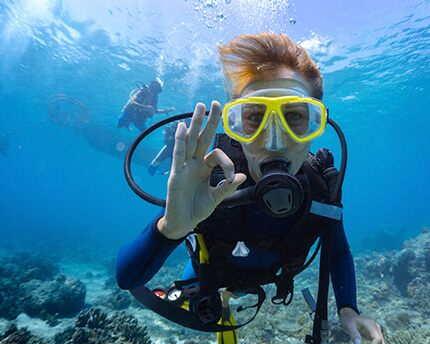
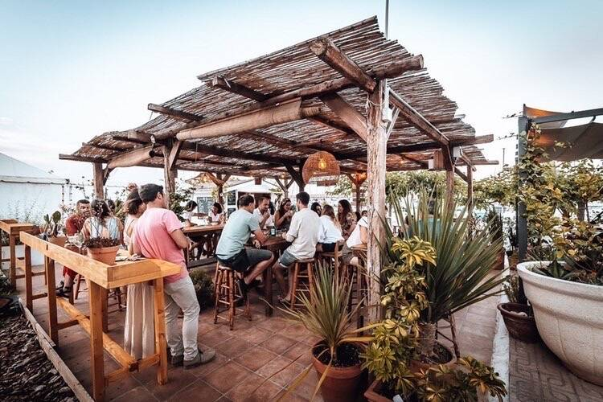
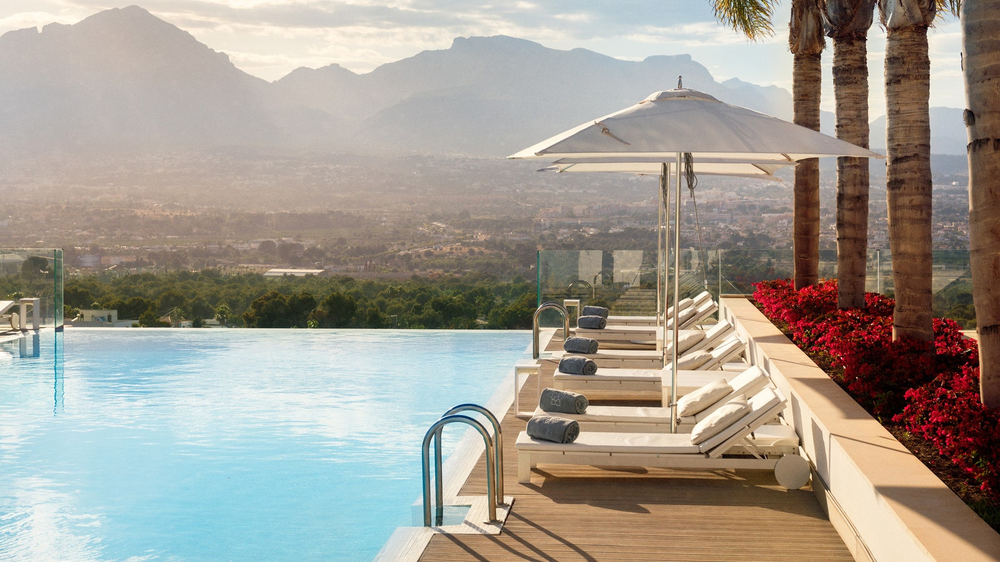

¿Estás preparando una escapada a la Costa Azahar? ¿Quieres sacarle todo el partido a tu visita al litoral de la provincia de Castellón? Te hemos preparado un recorrido con el que llevarte de vuelta un buen número de recuerdos imborrables. ¡Toma buena nota de este itinerario y prepara las maletas!
A traves de los planes que os proporcionamos tendreis la oportunidad de descubrir una las costas mas bellas de España, ya sea por su gastronomia, la cual cuenta con gran variedad de productos autoctonos, o por las playas de arena fina y sus aguas cristalinas encontraras algo en ella que te dejara con ganas de volver
La gastronomía de la Comunitat Valenciana ha demostrado hace mucho tiempo que junto al arroz y las cocas existe un inmenso conjunto de tradiciones culinarias y grandes productos que, gracias al trabajo de excelentes profesionales, nos han convertido en un destino gastronómico de relevancia internacional.
Estos profesionales son un grupo heterogéneo, que guardan recetas ancestrales o innovan con la vanguardia por bandera.
De pequeños establecimientos familiares a restaurantes a los que se les han otorgado prestigiosos premios, existe en la Comunitat Valenciana una cultura gastronómica
reconocida.
Bajo el sello “L’Exquisit Mediterrani” agrupamos a todos estos profesionales de trayectorias tan diversas, que saben tratar nuestros productos como nadie, ¡te proponemos disfrutarlos por ti mismo!
Las playas de la Costa del Azahar ofrecen la oportunidad de disfrutar del sol y el mar, así como de practicar una variedad de deportes acuáticos como surf, windsurf, paddle surf, buceo y snorkel.
La región ofrece una gran variedad de senderos y rutas de senderismo que permiten explorar la belleza natural de la costa y sus alrededores. Estos senderos serpentean a lo largo de la costa y a través de paisajes naturales impresionantes, ofreciendo a los visitantes la oportunidad de disfrutar de la flora y fauna local mientras realizan actividades al aire libre.
La Costa del Azahar tiene una animada vida nocturna y eventos culturales todo el año, desde festivales hasta conciertos y exposiciones. Los visitantes pueden sumergirse en la cultura local y disfrutar del entretenimiento durante su estadía.
Si lo que buscas es descansar, puedes encontrar lujosos spas y centros de bienestar donde relajarte y rejuvenecer. Estos lugares ofrecen una amplia gama de tratamientos de belleza y masajes para que los visitantes disfruten de una experiencia de relajación total durante su estancia en la región.

Proyecto para la asignatura de lenguaje de marcas
Realizado por: